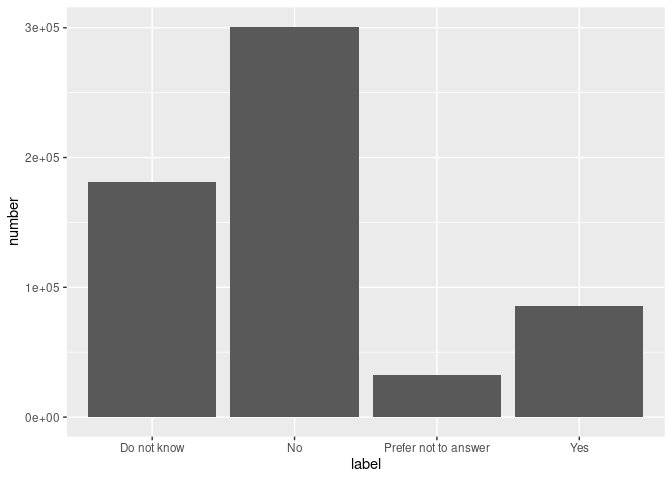
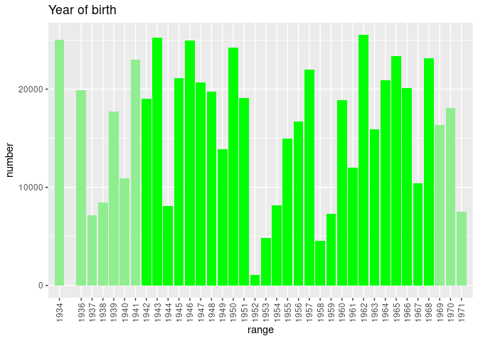
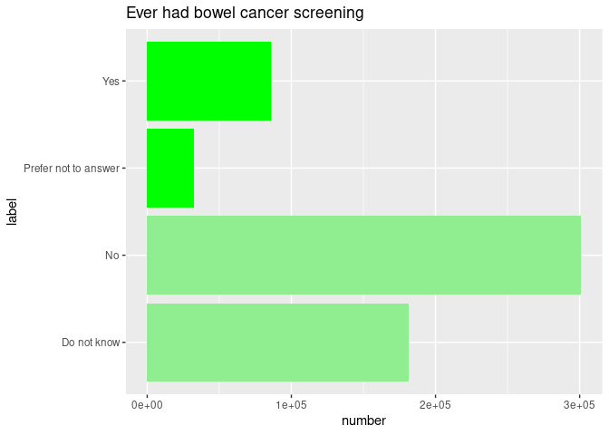

cloudos R package makes it easy to interact with Lifebit’s CloudOS https://cloudos.lifebit.ai/ platform in the R environment.
Installation
You can install the released version of cloudos from GitHub at this moment. (Will be listed on CRAN as well)
if (!require(remotes)) { install.packages("remotes") } remotes::install_github("lifebit-ai/cloudos")
Usage
Bellow are given the demonstration of how the cloudos package can be used.
Setup login details
To interact with the cloudos server, it require few login details.
Note: If no base_url given the default is https://cloudos.lifebit.ai/
cb_base_url <- "http://cohort-browser-766010452.eu-west-1.elb.amazonaws.com" my_auth <- "your_apikey" my_team_id <- "your_team_id" # OR from environment variable stored in a ~/.Renviron file my_auth <- Sys.getenv("test_cloudos_apikey") my_team_id <- Sys.getenv("test_cloudos_team_id")
Connect to CloudOS
Lets create a cloudos object with the login details, which can help us connect to cloudos server.
my_cloudos <- cloudos::connect_cloudos(base_url = cb_base_url, auth = my_auth, team_id = my_team_id) my_cloudos #> Base URL: http://cohort-browser-766010452.eu-west-1.elb.amazonaws.com #> Authentication Method: API Key #> Team ID: 5f046bf6c132dd15fdd1a525
Application - Cohort Browser
Cohort Browser is part of Lifebit’s cloudos offering. Lets explore how to interact with this in R environment.
List Cohorts
To check list of available cohorts in a workspace.
cohorts <- cloudos::cb_list_cohorts(my_cloudos) #> Total number of cohorts found-57. But here is 10. For more, change 'page_number' and 'page_size' head(cohorts,5) #> id name #> 1 5f73456e79721e542d5bea37 Cohort-R-to-compare #> 2 5f68c6a0e95ca00b6918a2e9 Cohort-R #> 3 5f6228133097cc7a6504fb76 cohort-test-2 #> 4 5f6227f285aae86f12fa9af9 test-cohort0-r-lib #> 5 5f60a9b1cecd166285ffd8a7 dsadasdas #> description number_of_participants #> 1 185674 #> 2 This cohort is for testing purpose, created from R. 336107 #> 3 For testing in R-lib 4434 #> 4 For testing R-lib 644686 #> 5 644686 #> number_of_filters created_at updated_at #> 1 3 2020-09-29T14:32:14.048Z 2020-09-29T14:52:13.228Z #> 2 3 2020-09-21T15:28:32.659Z 2020-09-29T14:52:03.252Z #> 3 4 2020-09-16T14:58:27.928Z 2020-09-28T11:18:31.430Z #> 4 0 2020-09-16T14:57:54.643Z 2020-09-16T14:57:54.643Z #> 5 0 2020-09-15T11:46:57.334Z 2020-09-15T11:46:57.334Z
Create a cohort
To create a new cohort.
my_cohort <- cloudos::cb_create_cohort(my_cloudos, cohort_name = "Cohort-R", cohort_desc = "This cohort is for testing purpose, created from R.") my_cohort
Get a cohort
Get a available cohort in to a cohort R object. This cohort object can be used in many different other functions.
my_cohort <- cloudos::cb_load_cohort(cloudos = my_cloudos, cohort_id = "5f6228133097cc7a6504fb76") my_cohort #> Cohort ID: 5f6228133097cc7a6504fb76 #> Cohort Name: cohort-test-2 #> Cohort Description: For testing in R-lib
Get samples table
Get all the samples (participants) table for a cohort with phenotypic filters applied.
cohort_samples <- cloudos::cb_get_samples_table(cloudos = my_cloudos, cohort = my_cohort) head(cohort_samples, 5) #> i f20001i0a0 f31i0a0 f34i0a0 f52i0a0 f5984i0aavg #> 1 1000184 non-melanoma skin cancer Female 1957 January 62.5803571428571 #> 2 1001600 nasal cavity cancer Female 1968 September 68.7105263157895 #> 3 1002915 nasal cavity cancer Female 1950 March 58.8495575221239 #> 4 1004792 parathyroid cancer Male 1959 November 66.7456140350877 #> 5 1008748 trachea cancer Female 1959 April 61.3035714285714 #> f5984i0amin f5984i0amax #> 1 1 270 #> 2 1 270 #> 3 2 270 #> 4 2 270 #> 5 2 245
Get sample filters plot
Get ggplots for all the applied phenotypic filters for a cohort.
As this based on ggplot objects, this can be modified further.
plot_list <- cloudos::cb_plot_filters(cloudos = my_cloudos, cohort = my_cohort) #> Warning: Ignoring unknown parameters: binwidth, bins, pad #> Warning: Continuous limits supplied to discrete scale. #> Did you mean `limits = factor(...)` or `scale_*_continuous()`? #> Warning: Ignoring unknown parameters: binwidth, bins, pad library(ggpubr) #> Loading required package: ggplot2 ggpubr::ggarrange(plotlist = plot_list)

Individual plots
plot_list[[1]]

plot_list[[2]]

Covert ggplot objects to plotly elements (just for demonstration purpose, in markdown plotly don’t support.)
p1 <- plotly::ggplotly(plot_list$filter_id_34) p1
p2 <- plotly::ggplotly(plot_list$filter_id_2345) p2
Get genotypic table
Get all the genotypic table for a cohort.
#cohort_genotype <- cloudos::cb_get_genotypic_table(my_cloudos, my_cohort) cohort_genotype <- cloudos::cb_get_genotypic_table(cloudos = my_cloudos) head(cohort_genotype, 5) #> index Chromosome Location Reference Alternative Gene #> 1 12 1 1:100011443 G T AC118553.2; SLC35A3 #> 2 2 1 1:100007041 A G AC118553.2; SLC35A3 #> 3 1 1 1:100007040 T G AC118553.2; SLC35A3 #> 4 13 1 1:100015306 C A AC118553.2; SLC35A3 #> 5 14 1 1:100015331 G A AC118553.2; SLC35A3 #> cn #> 1 zzg_m_1_12 #> 2 zzg_m_1_2 #> 3 zzg_m_1_1 #> 4 zzg_m_1_13 #> 5 zzg_m_1_14
Filtering
Search phenotypic filters
Search for phenotypic filters based on a term.
all_filters <- cloudos::cb_search_phenotypic_filters(cloudos = my_cloudos, term = "cancer") #> Total number of filters - 29 head(all_filters, 5) #> categoryPathLevel1 categoryPathLevel2 categoryPathLevel3 #> 1 UK Biobank Assessment Centre Touchscreen Health and medical history #> 2 UK Biobank Assessment Centre Touchscreen Health and medical history #> 3 UK Biobank Assessment Centre Touchscreen Health and medical history #> 4 UK Biobank Assessment Centre Touchscreen Sex-specific factors #> 5 UK Biobank Assessment Centre Touchscreen Sex-specific factors #> categoryPathLevel4 id #> 1 Cancer screening 2345 #> 2 Cancer screening 2355 #> 3 Medical conditions 2453 #> 4 Female-specific factors 2674 #> 5 Female-specific factors 2684 #> name type #> 1 Ever had bowel cancer screening bars #> 2 Most recent bowel cancer screening histogram #> 3 Cancer diagnosed by doctor bars #> 4 Ever had breast cancer screening / mammogram bars #> 5 Years since last breast cancer screening / mammogram histogram #> valueType units instances array #> 1 Categorical single 4 1 #> 2 Integer years 4 1 #> 3 Categorical single 4 1 #> 4 Categorical single 4 1 #> 5 Integer years 4 1 #> description #> 1 "ACE touchscreen question ""Have you ever had a screening test for bowel (colorectal) cancer? (Please include tests for blood in the stool/faeces or a colonoscopy or a sigmoidoscopy)"" If the participant activated the Help button they were shown the message: Screening tests for bowel or colorectal cancer include: - FOBT (faecal occult blood test) - this is when you are given a set of cards and asked to smear a part of your stool on three separate occasions onto the cards and then return the cards to be tested for blood. - Sigmoidoscopy - a tube is used to examine the lower bowel. This is usually done in a doctor's office without pain relief. - Colonoscopy - a long tube is used the examine the whole large bowel; you would usually have to drink a large amount of special liquid to prepare the bowel; and you would be given a sedative medication for the procedure. " #> 2 "ACE touchscreen question ""How many years ago was the most recent one of these tests?"" The following checks were performed: If answer If answer > Participants age - 5 years then rejected If answer > 20 then participant asked to confirm If the participant activated the Help button they were shown the message: If you are unsure; please provide an estimate or select Do not know. ~F2355~ was collected from participants who indicated they have had a screening test for bowel (colorectal) cancer; as indicated by their answers to ~F2345~" #> 3 "ACE touchscreen question ""Has a doctor ever told you that you have had cancer?"" If the participant activated the Help button they were shown the message: If you are unsure if you have been told you had cancer; select Do not know and you will be asked about this by an interviewer later during this visit. " #> 4 "ACE touchscreen question ""Have you ever been for breast cancer screening (a mammogram)?""" #> 5 "ACE touchscreen question ""How many years ago was your last screen?"" The following checks were performed: If answer If answer > Participants age - 15 years then rejected If answer > 15 then participant asked to confirm If the participant activated the Help button they were shown the message: If you are unsure; please provide an estimate or select Do not know. ~F2684~ was collected from women who indicated that they had been for a mammogram; as defined by their answers to ~F2674~" #> descriptionParticipantsNo descriptionItemNo descriptionStability coding #> 1 501599 572225 Complete 100349 #> 2 180035 202611 Complete 100567 #> 3 501592 572218 Complete 100603 #> 4 272921 309271 Complete 100349 #> 5 223188 252179 Complete 100567 #> descriptionCategoryID descriptionItemType descriptionStrata descriptionSexed #> 1 100040 Data Primary Unisex #> 2 100040 Data Primary Unisex #> 3 100044 Data Primary Unisex #> 4 100069 Data Primary Female #> 5 100069 Data Primary Female #> link #> 1 http://biobank.ctsu.ox.ac.uk/showcase/field.cgi?id=2345 #> 2 http://biobank.ctsu.ox.ac.uk/showcase/field.cgi?id=2355 #> 3 http://biobank.ctsu.ox.ac.uk/showcase/field.cgi?id=2453 #> 4 http://biobank.ctsu.ox.ac.uk/showcase/field.cgi?id=2674 #> 5 http://biobank.ctsu.ox.ac.uk/showcase/field.cgi?id=2684 #> instance0Name #> 1 Initial assessment visit (2006-2010) at which participants were recruited and consent given #> 2 Initial assessment visit (2006-2010) at which participants were recruited and consent given #> 3 Initial assessment visit (2006-2010) at which participants were recruited and consent given #> 4 Initial assessment visit (2006-2010) at which participants were recruited and consent given #> 5 Initial assessment visit (2006-2010) at which participants were recruited and consent given #> instance1Name instance2Name #> 1 First repeat assessment visit (2012-13) Imaging visit (2014+) #> 2 First repeat assessment visit (2012-13) Imaging visit (2014+) #> 3 First repeat assessment visit (2012-13) Imaging visit (2014+) #> 4 First repeat assessment visit (2012-13) Imaging visit (2014+) #> 5 First repeat assessment visit (2012-13) Imaging visit (2014+) #> instance3Name instance4Name instance5Name instance6Name #> 1 First repeat imaging visit (2019+) #> 2 First repeat imaging visit (2019+) #> 3 First repeat imaging visit (2019+) #> 4 First repeat imaging visit (2019+) #> 5 First repeat imaging visit (2019+) #> instance7Name instance8Name instance9Name instance10Name instance11Name #> 1 #> 2 #> 3 #> 4 #> 5 #> instance12Name instance13Name instance14Name instance15Name instance16Name #> 1 #> 2 #> 3 #> 4 #> 5 #> bucket300 bucket500 bucket1000 bucket2500 bucket5000 bucket10000 #> 1 FALSE FALSE FALSE FALSE FALSE FALSE #> 2 FALSE FALSE FALSE FALSE FALSE FALSE #> 3 FALSE FALSE FALSE FALSE FALSE FALSE #> 4 FALSE FALSE FALSE FALSE FALSE FALSE #> 5 FALSE FALSE FALSE FALSE FALSE FALSE #> orderPhenotype checked #> 1 40 1 #> 2 40 1 #> 3 42 1 #> 4 47 1 #> 5 47 1
Lets choose one filter from above table
# apply this first row filter my_phenotypic_filter <- all_filters[1,] my_phenotypic_filter #> categoryPathLevel1 categoryPathLevel2 categoryPathLevel3 #> 1 UK Biobank Assessment Centre Touchscreen Health and medical history #> categoryPathLevel4 id name type #> 1 Cancer screening 2345 Ever had bowel cancer screening bars #> valueType units instances array #> 1 Categorical single 4 1 #> description #> 1 "ACE touchscreen question ""Have you ever had a screening test for bowel (colorectal) cancer? (Please include tests for blood in the stool/faeces or a colonoscopy or a sigmoidoscopy)"" If the participant activated the Help button they were shown the message: Screening tests for bowel or colorectal cancer include: - FOBT (faecal occult blood test) - this is when you are given a set of cards and asked to smear a part of your stool on three separate occasions onto the cards and then return the cards to be tested for blood. - Sigmoidoscopy - a tube is used to examine the lower bowel. This is usually done in a doctor's office without pain relief. - Colonoscopy - a long tube is used the examine the whole large bowel; you would usually have to drink a large amount of special liquid to prepare the bowel; and you would be given a sedative medication for the procedure. " #> descriptionParticipantsNo descriptionItemNo descriptionStability coding #> 1 501599 572225 Complete 100349 #> descriptionCategoryID descriptionItemType descriptionStrata descriptionSexed #> 1 100040 Data Primary Unisex #> link #> 1 http://biobank.ctsu.ox.ac.uk/showcase/field.cgi?id=2345 #> instance0Name #> 1 Initial assessment visit (2006-2010) at which participants were recruited and consent given #> instance1Name instance2Name #> 1 First repeat assessment visit (2012-13) Imaging visit (2014+) #> instance3Name instance4Name instance5Name instance6Name #> 1 First repeat imaging visit (2019+) #> instance7Name instance8Name instance9Name instance10Name instance11Name #> 1 #> instance12Name instance13Name instance14Name instance15Name instance16Name #> 1 #> bucket300 bucket500 bucket1000 bucket2500 bucket5000 bucket10000 #> 1 FALSE FALSE FALSE FALSE FALSE FALSE #> orderPhenotype checked #> 1 40 1
Apply phenotypic filter
We can get statistic of sample numbers in a cohort for which a filter is applied.
# phenotype filter cohort_with_filters <- cloudos::cb_get_filter_statistics(my_cloudos, cohort = my_cohort, filter_id = my_phenotypic_filter$id) cohort_with_filters #> # A tibble: 4 x 4 #> `_id` number total label #> <int> <int> <int> <chr> #> 1 -3 32545 600000 Prefer not to answer #> 2 -1 181143 600000 Do not know #> 3 0 300719 600000 No #> 4 1 85593 600000 Yes
We can get number of total participants after applying a filter.
# filter participants total_participants_with_filter <- cloudos:::cb_filter_participants(my_cloudos, cohort = my_cohort, filter_id = my_phenotypic_filter$id) total_participants_with_filter #> $total #> [1] 644686 #> #> $count #> [1] 333264
Save a filter
Save a filter into the database.
# apply filter (cb_genotypic_save) gs <- cloudos::cb_genotypic_save(my_cloudos, cohort = my_cohort, filter_id = my_phenotypic_filter$id) gs #> cohortId markers filters _id #> data "5f6228133097cc7a6504fb76" List,0 List,1 "5f74b3dd79721e542d5beaab" #> numberOfParticipants #> data 32545
Additional for UI
Get samples table for selected rows
Create a RAW data string. This usually generates after selecting participants on UI. (more information will be added how to create this in R)
NOTE: This function will be improved raw_data arg is temporary.
new_raw_data <- '{"columns":[{"id":34,"instance":0,"array":{"type":"exact","value":0}},{"id":31,"instance":0,"array":{"type":"exact","value":0}},{"id":52,"instance":0,"array":{"type":"exact","value":0}},{"id":5984,"instance":0,"array":{"type":"avg"}},{"id":5984,"instance":0,"array":{"type":"min"}},{"id":5984,"instance":0,"array":{"type":"max"}},{"id":20001,"instance":0,"array":{"type":"exact","value":0}}],"ids":["5f185b92bf92ed4d3be9637d","5edbdd689d700db709af0c2f","5f185b91bf92ed4d3be9587e","5f185b91bf92ed4d3be95984","5edbdd689d700db709af0c3e","5edbdd689d700db709af0c2b","5edbdd689d700db709af0c2d","5f185b93bf92ed4d3be982e9","5edbdd689d700db709af0c2a","5edbdd689d700db709af0c4d"],"type":"csv","base_url":"http://cohort-browser-766010452.eu-west-1.elb.amazonaws.com"}'
Using this above raw data lets extract selected participants.
df <- cloudos::cb_extract_samples(my_cloudos, raw_data = new_raw_data) df #> i Year_of_birth Sex Month_of_birth ECG._load.0.avg ECG._load.0.min #> 1 1000002 NA NA NA #> 2 1000016 1954 Male September 66.88393 2 #> 3 1000020 NA NA NA #> 4 1000035 NA NA NA #> 5 1000048 1950 Female January 59.76106 2 #> 6 1000057 1942 Female February 74.44643 3 #> 7 1000059 1964 Female December 71.14912 1 #> 8 1000061 NA NA NA #> 9 1000063 1944 Female April 66.19643 2 #> 10 1000068 1947 Female November 65.12500 1 #> ECG._load.0.max Cancer_code._self.reported.0.0 #> 1 NA #> 2 270 cervical cancer #> 3 NA #> 4 NA #> 5 195 chronic myeloid #> 6 270 metastatic cancer (unknown primary) #> 7 270 uterine/endometrial cancer #> 8 NA #> 9 270 chronic myeloid #> 10 195 bladder cancer